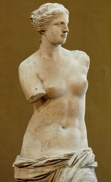

-

Dama com Arminho
No ano de 1485, Leonardo da Vinci inicia essa sua grande obra-prima: é o retrato de Cecília Gallerani...
-

Mona Lisa
Mona Lisa ("Senhora Lisa") é a mais notável e conhecida obra de Leonardo da Vinci um dos mais eminentes homens...
-

Vênus de Milo
A Vênus de Milo é uma estátua da Grécia Antiga pertencente ao acervo do Museu do Louvre situado em Paris, França....